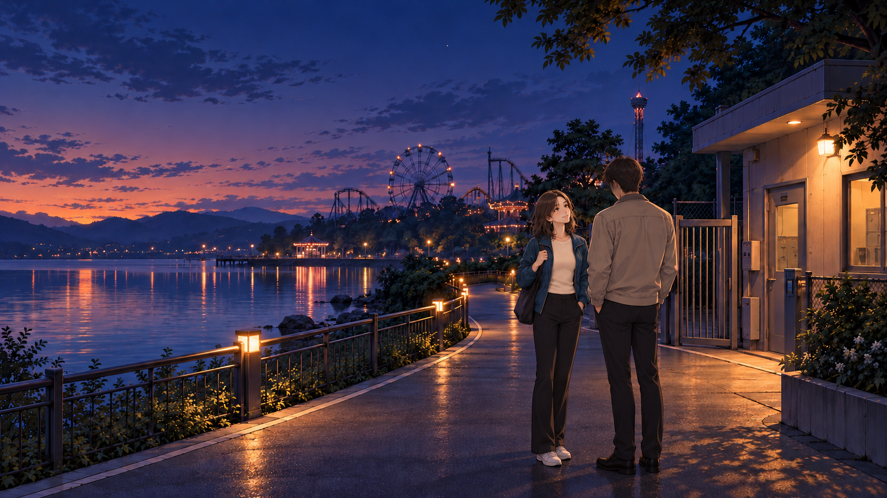
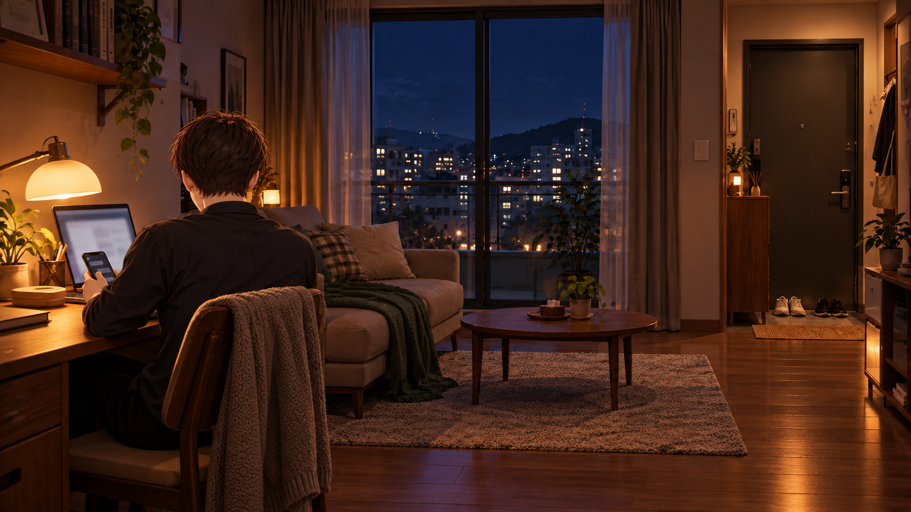

주인공 · 같은 사람의 하루
펍에서 나란히 앉은 장면의 왼쪽 인물이 기준이에요. 짧은 짙은 갈색 머리와 자연스러운 목덜미를 유지하고, 얼굴은 뒷모습과 화면 구도로 가려요. 밖에서는 베이지색 재킷, 실내에서는 짙은 셔츠로 이어집니다.
게임으로 돌아가기 ↗
 기준 · 펍에서 함께 휴대폰 보기짧은 머리와 목덜미, 힘을 뺀 어깨. 얼굴이 드러나지 않는 뒷모습이에요.
기준 · 펍에서 함께 휴대폰 보기짧은 머리와 목덜미, 힘을 뺀 어깨. 얼굴이 드러나지 않는 뒷모습이에요.
 퇴근길베이지색 외투 안에 짙은 셔츠. 머리 전체를 검게 칠하지 않고 자연스러운 뒷모습으로 이어가요.
퇴근길베이지색 외투 안에 짙은 셔츠. 머리 전체를 검게 칠하지 않고 자연스러운 뒷모습으로 이어가요.

서안과 게이트 밖 대화헤어스타일·겉옷·바지·신발이 퇴근길과 이어져요.
 오전 · 이용권 변경 문의기준 머리와 뒷모습을 적용하고 통화와 안내 자료를 짚는 동작을 유지했어요.
오후 · 마감표 확인화면 밖으로 얼굴을 가리고, 보이는 머리와 옷을 같은 기준으로 맞췄어요.
오전 · 이용권 변경 문의기준 머리와 뒷모습을 적용하고 통화와 안내 자료를 짚는 동작을 유지했어요.
오후 · 마감표 확인화면 밖으로 얼굴을 가리고, 보이는 머리와 옷을 같은 기준으로 맞췄어요.

집 · 책상 앞의 뒷모습펍에서 입었던 짙은 셔츠 차림으로 이어진다.